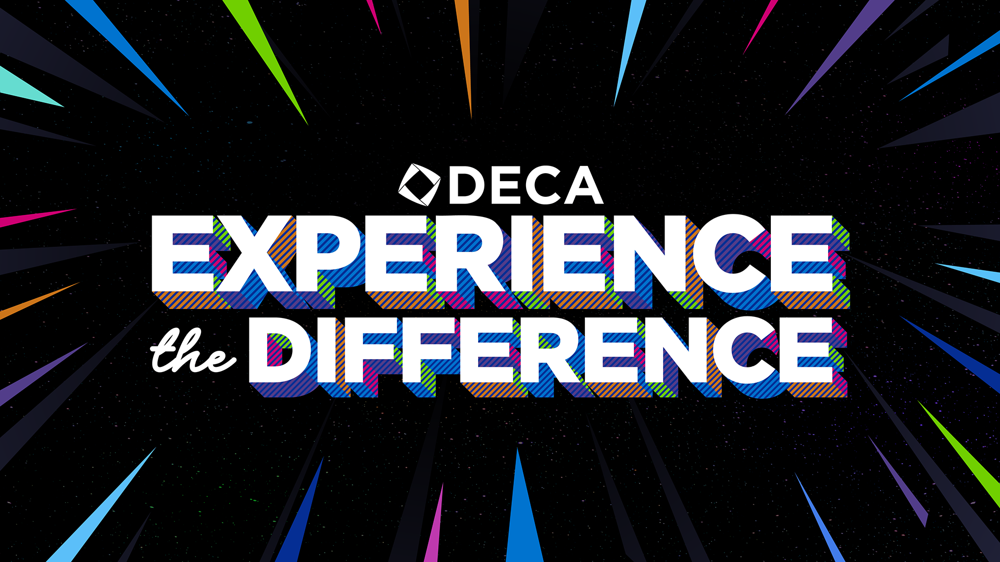

DECA
DECA is dedicated to equipping emerging leaders and entrepreneurs with the skills and knowledge necessary for successful careers in various fields, including marketing, finance, hospitality, and management. This organization operates on a global scale, supporting high school and college students as they prepare for future professional endeavors. By offering comprehensive programs and resources, DECA ensures that participants gain practical experience and valuable insights, positioning them for success in their chosen careers. Through its initiatives, DECA fosters the development of essential competencies and provides a platform for students to excel in the competitive landscape of these industries.